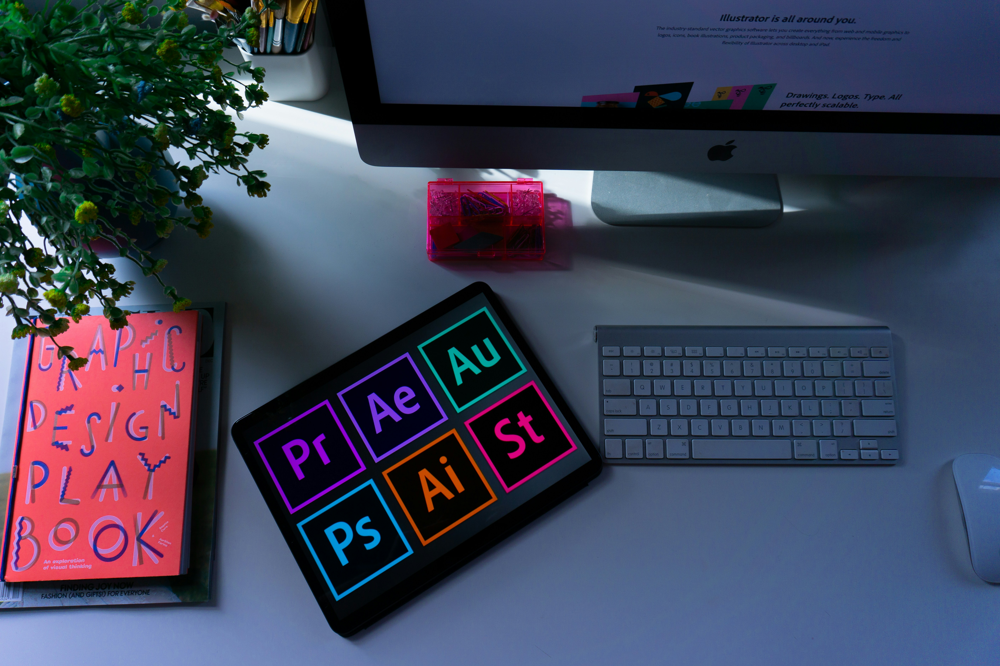
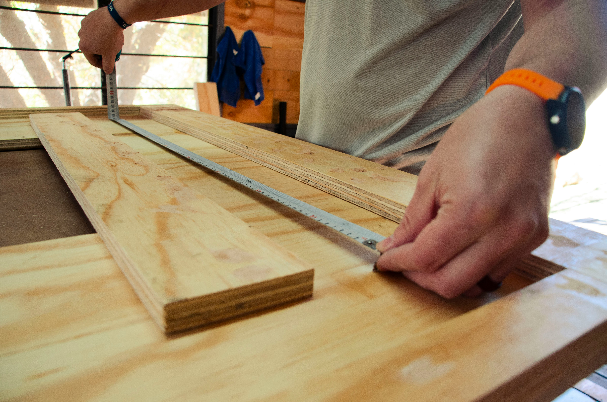

Ateliér
Návrh čistých vizuálnych konceptov, grafik a brandingov. Práca postavená na minimalizme, vyváženej typografii a estetike, ktorá upúta na prvý pohľad.
Dizajn · digitálna tvorba · Slovensko
Študent elektronického podnikania, ktorý spája moderný UI/UX dizajn, logiku vývoja a poctivý prístup k digitálnym projektom.
Pozrieť projektyVýber z mojej tvorby
Každý projekt začína dobrou otázkou. Tu sú tri príbehy, ktoré stoja za pozretie.

Návrh čistých vizuálnych konceptov, grafik a brandingov. Práca postavená na minimalizme, vyváženej typografii a estetike, ktorá upúta na prvý pohľad.
Praktické spracovanie podnikového účtovníctva, zakladanie T-účtov a modelovanie dát pre prehľadný rozbor hospodárenia a biznisových čísel.

Kompletný vývoj e-business webu – od UX výskumu a wireframov v Axure až po kódovanie minimalistického konfigurátora a rozhrania podľa dizajnového štýlu.
Trochu o mne
Som 20-ročný študent elektronického obchodu a manažmentu. V svojej tvorbe spájam technickú logiku s vizuálnym citom — od prvých skíc na papier cez interaktívne prototypy až po finálny kód.
Záleží mi na detailoch, prehľadnosti a riešeniach, ktoré používateľom reálne uľahčujú život. Keď práve nesedím nad kódom alebo návrhom webu, najradšej tvorím hudbu, trénujem a trávim čas s rodinou. Neustále hľadám nové výzvy, ako posúvať svoje zručnosti v UI/UX dizajne a webovom vývoji o krok ďalej.